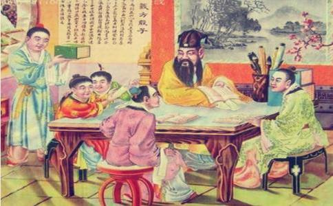

窦禹钧（即《三字经》里提到的窦燕山），五代后晋时期涿州范阳县人。后周时期大臣、藏书家。与兄窦禹锡皆以词学著名。唐末时任幽州掾，历官齐州、邓州、安州、同州等八州支使判官。后周时期，升户部郎中、太常少卿，以右谏议大夫致仕。
窦禹钧自幼丧父，由母亲抚养长大，很孝顺，对于母亲的话，从来不敢违逆。在那个时代的人，多数在二十岁左右就结婚，所以如果到了三十岁还没有儿子，就会感觉到 “无后为大”的忧虑。可禹钧到了三十余岁，膝下犹虚，正在愁眉不展的时候，忽然有一天夜间，做了一个梦，梦见他已故的祖父对他说：“你前生的恶业很重，所以你今生的命运，不仅没有儿子，并且寿命也很短促。希望你及早回心向善，努力多做救人济世的善事，或许可以转变业力，挽回命运。”他一觉醒来，把梦中祖父的话，一一铭记于心，从此立志诸恶莫作，众善奉行。
窦家有一仆人，盗用了禹钧二万银钱，恐怕给主人发觉，就写了一张债券，系在自己小女的臂上，券上写明：“永卖此女，偿所负钱。”仆人从此远逃他乡。禹钧发觉了这件事，把仆人所写的债券焚毁，并且对仆人的女儿抚养得很好，那女儿长大后，禹钧还替她备了嫁妆，嫁了一位美满的贤婿。这个仆人知道此事之后，感动得痛哭流涕，回到窦禹钧面前，认罪待罚，而窦禹钧却不计前嫌，依然很和善地对待他。
有一年新年的元旦，窦禹钧到延庆寺去拜佛，在寺中大雄宝殿的拜垫旁，拾到了白银二百两，黄金三十两，他想一定是拜佛人的遗失物，就在寺中守候失主。等候了半天，果然看到一个哭哭啼啼而自言自语的人，窦禹钧问他何故哭泣，那人说：“我父亲给绑匪掳去，将被处死，我好不容易向亲友们东借西凑，得到白银二百两，黄金三十两，预备把这笔金银赎回我父亲的死。哪知我一摸钱袋，黄金白银都没有了，这样我的父亲就难免一死，刚才我到这里来进香拜佛，不知是否遗失在寺中。” 禹钧知道那人是失主不误，就将黄金白银如数归还，并且还赠给他一笔路费，失主欢天喜地的道谢而去。
又同村中，有家人去世无力购买棺木的，他就出钱埋葬；凡是女子到了二十七岁还由于贫寒等原因未能出嫁的，就出钱为她出嫁；凡是二十八岁以上的男子，家境贫穷无法营生的，就看情况借给本钱，让他去做买卖。这样，因窦禹钧的善心而活下去的有几十家；各方贤士，依赖他举荐而被官府录用做事的，也不胜枚举。
又在家宅的南面，建书院四十间，藏书千卷，请有德行的人为老师，四方家境贫寒但愿意学习的孩子，都可以来学习，并且供给学子口粮，所以在这里念书的孩子学识越来越高。
窦禹钧还将自己每年的收入，除留下家里必需的开销之外，剩余的都拿来救济穷人。而家里的生活却非常简朴，没有金玉等装饰，也没有穿华丽衣服的女子。
就这样，努力不懈地行善了几年，有一天，又梦到祖父对他说：“你命里本来无子，又短命，但你这几年来一直积累阴德，已经名挂天曹，天帝特为你延寿三纪（三十六岁），赐予五个儿子，都贵显福寿。命终之后，你可以升天做洞天真人。”又说：“行善得善报，作恶得恶报，这个道理在人间、天上、地下都是一样。善恶的报应，有些在今世就会显露出来，有些要到来世才会受报，但天网恢恢，疏而不漏，因果律无处不在，从来就不会遗漏人的任何一个细微的起心动念，你对此不应当有任何怀疑。”
自此之后，窦禹钧就越发精勤地积德累功。后来，他果然有五个儿子。由于自己重礼仪、德行好，且教子有方、家庭和睦，窦家终于发达了。他的长子名仪，在后晋时中进士，入宋官至礼部尚书、翰林学士，是宋初一代名臣，他去世后太祖赵匡胤曾悲伤地感叹：“天何夺我窦仪之速也！”次子名俨，也是后晋进士，历仕汉、周，宋初任礼部侍郎。三子名侃，为后汉进士，曾任宋起居郎。四子名窦偁为后汉进士，入宋任左谏议大夫。窦僖是后周进士，曾任宋左补阙。当时人们美称他们为“窦氏五龙”。当五个儿子均金榜题名时，侍郎冯道赠他一首诗：“窦燕山十郎，教子以义方。灵椿一株老，丹桂五枝芳。”窦禹钧还有八个孙子，也都很贵显。最后，窦禹钧做到谏议大夫的官职，享寿八十二岁，临终前谈笑风生，向亲友告别，沐浴更衣，无病而卒。
这个公案中，窦禹钧因为宿世恶业的缘故，没有后代而且短命，但他听从祖父在梦中的劝告，从善如流，长时间不懈地努力行善，终于改变了自己的宿命，并且命终升天。他祖父第二次在梦中告诉他的话很重要，也就是“行善得善报，作恶得恶报，这个道理在人间、天上、地下都是一样”，并说“天网恢恢，疏而不漏”，让他对因果报应产生信心，从而行善积德不松懈。
实际上，对因果信心的大小决定了此人行善恒心的大小。如果对因果似信非信，则行善的决心与恒心就会很小；相反，如果对因果律有了充分的理解，并且深信不疑，内心就会彻底舍弃傲慢与放逸所导致的我行我素，从而转向对因果律的恭敬与臣服，这样，对自己内心的念头、嘴上的语言、身体的行为，就会小心翼翼，不敢放肆或疏忽大意。
现今有些人，想通过行善改变命运，才做了一件微小的善事，如参加了一次放生、布施一点钱财，就希望自己的命运有个彻底的改变，妻荣子贵，事事顺心，这对因果律的理解未免太肤浅了。不容否认，此人所做的每件善事将来肯定会得到善报的，但仅靠一两件善事的力量还不足以改变命运。
行善到什么时候，才能从根本上改变命运呢？需将自己的内心世界来一个彻底的改变――原来在乎财物而吝啬的，现在变得不在乎财物而在乎他人的痛苦与快乐而不吝啬了；原来动不动就发火的，现在变得安详平和了；原来事事挑毛病抱怨的，现在变得包容而厚道了；原来内心总是希望别人倒霉、自己一人发迹的，现在变得真心希望所有的人都幸福，哪怕自己一人受苦也不要紧；原来对他人漠不关心、只关心自己的，现在变得只关心他人、不关心自己了；原来觉得起心动念与言语行为没有什么大不了的，现在变得小心翼翼、战战兢兢了……
什么人的内心世界若是有了上述改变，则此人的命运一定很快会有大的转变。因为心决定一切，是磁石，才会吸引铁块；是善心，才会体验安乐。